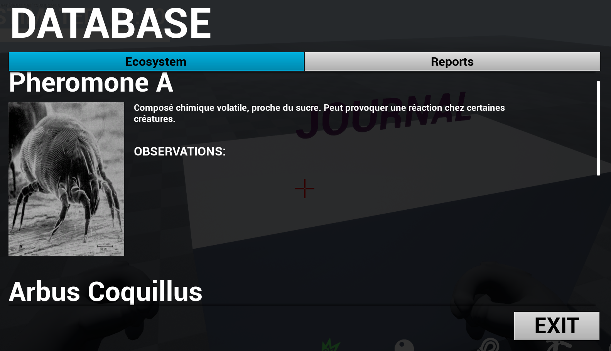

A Planet In The Fog (WIP)
TEAM
9 people
ENGINE
Unreal Engine 4
ROLE
Game designer / Gameplay programmer (3C)
TIME
9 months (June 2020)
A first-person exploration game in which you play an astronaut on an exoplanet covered in a mysterious fog. You explore the treacherous environment during your expeditions and gather valuable data to analyze in order to understand the planet's nature.
We just finished pre-production and will begin production in January: the goal is to deliver a polished 30-min vertical slice by the end of June.
I am the game designer and gameplay programmer responsible for the 3C. We worked in Blueprint during the preproduction but will code the entire demo in C++ during the production phase.
MY TASKS:
3C DESIGN / PROTOTYPING
— An in-depth climbing system (as showcased in video above)
— An automatic ledge-grabbing system
— Working with IK technology for the arms' animations
I documented the entire climbing feature on our
Confluence-powered wiki
: the whole team can access it from anywhere, and I wrote it with both designers' and programmers' needs in mind.Featuring:
— Intentions and target dynamic
— Controls
— Feature descriptions with visuals mockups and technical specifications
— Tweakable variables
— Signs and feedback
DATA SYSTEMS
— Questline and journal data architecture
— Procedural UI data population (on UMG)

I created spreadsheets for the other game designers to work with: the sheets are then exported to CSV and imported as DataTables in UE4.
This way, designers don't have to work inside the engine if they don't need to.
The data above is used to populate the journal procedurally in UMG UI, as shown below.
